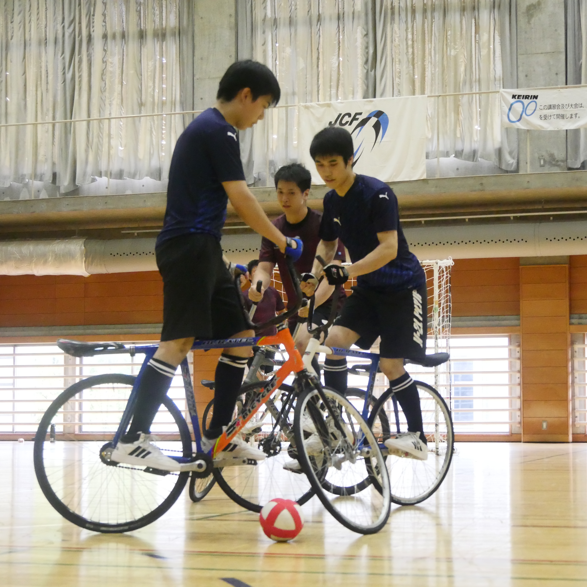

2026全日本選手権において、東京科学大学からは２チームが出場し、 結果は以下の通りとなりました。
-
Tokyo Tech
福田・山本ペア
予選リーグ敗退 -
ST覇気
牧野・柳井ペア
予選リーグ敗退
今大会は東京科学大学から２チームが出場しましたが、両チームともに予選敗退となりました。
Tokyo Techはmurata+OUに5-2で勝利をおさめ、決勝トーナメント出場に王手というところでしたが、 Victoryに3-6で敗北。得失点差により決勝トーナメント進出は叶いませんでした。
ST覇気も奮闘。Ritsには2-2の同点の試合を展開し、 格上の相手にも果敢に挑みましたが、一勝を手にすることはできませんでした。
社会人最大の大会である全日本。ここで大きな結果を残せるようにさらなる努力に励みます。

奥から山本選手・福田選手
今回を振り返ると、嬉しさと悔しさの両方が残る結果になりました。 まず、これまで目標としてきた相手に勝つことができ、自分の成長を実感することができました。 これまで練習してきたことが少しずつ結果につながっていると思うと、素直に嬉しかったですし、頑張ってきてよかったと感じました。 しかし、その後の試合では負けてしまい、まだまだ自分には足りない部分があることを思い知らされました。 成長を実感できたからこそ、負けたことがより悔しく感じられました。 今回の経験を通して、自分の成長を感じると同時に、まだまだ努力する余地があることにも気づくことができました。 勝てたことは自信にし、負けた悔しさは次に進むための力に変えていきたいです。この悔しさを忘れず、一つ一つの練習を大切にして、これからも努力していきたいです。